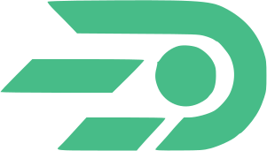

Снимаем рутину с бизнеса — а не добавляем ещё один сложный проект
Разрабатываем AI-агентов, автоматизацию и ПО под конкретную задачу — без долгих согласований и непонятных смет.
Команда, которая разрабатывает под задачу, а не продаёт готовый шаблон
Кто мы
Ramzur — IT-компания из Казахстана. Мы фокусируемся на трёх направлениях: разработка AI-агентов, автоматизация бизнес-процессов и разработка программного обеспечения под ключ. Не распыляемся на всё подряд — берём проекты там, где можем гарантировать результат.
Почему с нами
Мы не продаём «часы разработки» — мы продаём решение конкретной проблемы бизнеса. Перед стартом разбираемся, что реально нужно клиенту, и говорим прямо, если что-то можно сделать проще и дешевле, чем клиент изначально предполагал.
Заявка → созвон. Короткий разговор, чтобы понять задачу.
Предложение. Объём работ, сроки и стоимость — без сюрпризов позже.
Разработка с демо. Вы видите прогресс на каждом этапе, а не ждёте результата вслепую.
Сдача и поддержка. Проект передаётся вместе с периодом сопровождения.
Команда
Команда разработчиков. Все — выпускники Nazarbayev University.
- Backend
- Frontend
- Mobile
- ML / AI
С кем мы уже работаем
Не берём проекты «про запас» — поэтому список короткий и в нём только те, у кого решение действительно работает.
- Услуги грузоперевозок в Казахстан
- Современная школа с обучением на английском языке
-

Dopsy — аренда поля в Астане - Sabil life — платформа для мигрантов в Doha и Dubai
- Система контроля температуры мавзолея Ахмета Яссауи
Три направления, в которых мы гарантируем результат
AI-агенты, которые реально снимают работу с людей
Для бизнеса, где сотрудники тратят часы на повторяющиеся задачи: обработку заявок, ответы на типовые вопросы, сбор и обработку данных.
Что входит
- Анализ процесса и точек, где агент даст максимальный эффект
- Разработка и настройка AI-агента под конкретную задачу
- Интеграция с уже используемыми системами (CRM, мессенджеры, почта)
- Тестовый период перед полным запуском
Меньше ручной работы — больше времени на то, что двигает бизнес
Для компаний, где процессы всё ещё держатся на таблицах, ручном вводе данных и разрозненных инструментах, которые не «разговаривают» друг с другом.
Что входит
- Аудит текущих процессов и поиск узких мест
- Автоматизация участков: документооборот, отчётность, обмен данными между системами
- Настройка так, чтобы решение работало без постоянного участия разработчика
Программное обеспечение под вашу задачу — не «универсальное», а ваше
Для компаний, которым нужно решение, которого нет на рынке в готовом виде, или доработка/замена того, что уже не справляется.
Что входит
- Веб- и мобильная разработка
- Интеграции с внешними сервисами и системами
- Архитектура с расчётом на рост нагрузки, а не только на «сейчас»
Что происходит, если что-то пойдёт не так
Мы понимаем, что для клиента подрядчик по разработке — это риск: деньги вперёд, результат потом. Работаем так, чтобы этот риск был на нас, а не на вас.
Гарантия сроков
Если срок сдачи этапа сдвигается по нашей вине — компенсируем это дополнительными часами разработки или скидкой на следующий этап.
Прозрачность процесса
Вы не ждёте финала «вслепую» — на каждом этапе есть демо-доступ к текущей версии и регулярный отчёт о статусе.
Пробный этап
Можно начать не с полного контракта, а с небольшого пилотного этапа — аудита или прототипа, — чтобы оценить, как мы работаем.
Чек-лист: 5 признаков, что бизнесу пора внедрять AI-агента
- 01Один и тот же вопрос клиенты задают снова и снова, и на него отвечает живой человек
- 02Заявки и обращения теряются или обрабатываются с задержкой в часы, а не минуты
- 03Сотрудник тратит часть дня на перенос данных из одной системы в другую вручную
- 04Ответ клиенту зависит от того, на месте ли конкретный сотрудник
- 05Рост числа обращений означает, что придётся нанимать ещё людей на ту же типовую работу
Узнали свой бизнес хотя бы в одном пункте?
Это уже сигнал, что процесс можно передать AI-агенту. Опишите его нам — разберём бесплатно, без обязательств по дальнейшей разработке.
Оставьте заявку — обсудим задачу
Заполните два поля — свяжемся с вами в течение 24 часов, чтобы уточнить детали и предложить решение.
Не удалось отправить заявку
Нажмите «Отправить заявку» ещё раз или напишите нам напрямую:
Другие способы связи
Первый шаг — не контракт, а разговор
Опишите задачу — ответим и предложим решение в течение 24 часов.